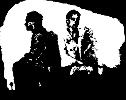
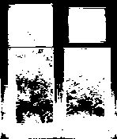

|Camila Arévalo, Francesca Parodi, Constanza Cornejo,
Mariana Lagunas, Valeria Pellerano, Antonia Rosales|
My Boyfriend Came from the War
De Olia Lialina
Sitio web creado en 1996, que combina una estructura de HTML simple, imágenes en blanco y negro, y una narrativa interactiva, que se desarrolla mediante la interacción con los elementos de la página. A la vez, presenta múltiples posibilidades de cómo interactuar y descubrir la historia.
Este sitio nos relata el reencuentro de una pareja después de que uno de ellos regresa de la guerra, teniendo que enfrentar una sensación de distancia emocional, traumas y otras situaciones que exploran la complejidad de las relaciones.


Con este propósito y su funcionalidad a partir del hipervínculo, se le considera:
- Narrativa hipertextual
- Ciberliteratura
- Netart
- Netfilm.
¿Bajo qué contexto surge esta obra?
Como muchas otras figuras del área del arte digital, Olia Lialina vivía en la llamada Unión Soviética, cuyo colapso coincide con el crecimiento del acceso a internet. Y la naturaleza de estas nuevas comunidades web llamaban más la atención de aquellos que habían estado viviendo bajo regímenes represivos, lo que la llevó a integrarse a estas.
Posteriormente, crea esta página con el fin de explorar la interacción entre el espacio digital y la narrativa. Resultaría siendo una de las primeras obras de Netart, optando por centrarse en la narrativa y menos en la técnica, marcando un precedente para el arte digital actual.
Relación con los principios de los nuevos medios de Lev Manovich
Modularidad: Los elementos que presenta la obra, tanto texto, imágenes e hipervínculos son considerados módulos independientes dentro del HTML, pero al final todos interactúan entre sí a medida que se hace uso de la página. Es el conjunto de ellos que permite conocer la historia, pero aun así pueden funcionar por separado.
Automatización: Si bien esta página no funciona de manera automática, los datos en HTML se organizan de manera dinámica, funcionando independientemente del orden de lo que clickeamos primero.
Variabilidad: Este principio se refleja en los diversos resultados y orden que los usuarios pueden obtener al interactuar con esta página, lo que facilita que haya diversas experiencias relacionadas a ella.
Transcodificación: Este proyecto es un ejemplo de una traducción de una vivencia personal y humana llevada a un formato digital, mediante una narrativa acompañada de recursos multimedia e hipervínculos.
Conclusión
Olia Lialina ha hablado respecto al Netart y a las formas que toma y por qué se empeña tanto en que sus obras residan en el código. “Si algo está en la net, debe estar en el lenguaje de la net”. Esto por defecto hace que el Netart sea único ya que estas expresiones solamente pueden existir en la web, debido a las particularidades de este medio. El lenguaje de la web, el uso de HTML permite contar la historia que Lialina quería contar de una manera que no se pudiese haber contado de ninguna otra manera.
El uso de ventanas, texto y clicks son intrínsecos a la obra. La reflexión al final es sobre la expresión dependiente del medio. Las cosas que expresamos están sujetas al medio que usamos, por lo que es esencial explorar los diferentes medios que existen para poder desbloquear de manera íntegra las cosas que queremos comunicar.